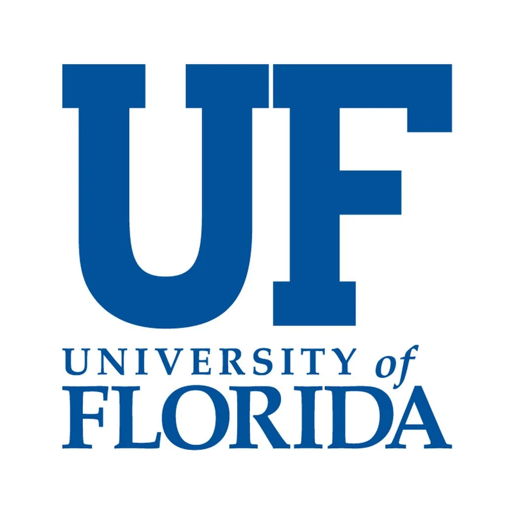

PhD Student, University of Alabama
Advised by Prof. Runlong Yu
I am a first-year PhD student in Computer Science at the University of Alabama, advised by Prof. Runlong Yu. My research focuses on AI for Science, including physics-informed neural networks, neural operators, generative methods, and foundation models for PDE solving and turbulence simulation.
I also have experience in large language models, computer vision, and transportation applications. Previously, I obtained my M.S. in Computer Science from the University of Florida and my B.E. from Xi'an Jiaotong University.
* denotes equal contribution
University of Alabama
AI for Science research — physics-informed ML, neural operators, turbulence simulation.

University of Florida
Computer vision for transportation — bikeability assessment, bus stop amenities, street design.
University of Washington
LLM agents in finance, visual navigation instruction generation.
Bosch
Vehicle simulation — auto response patterns, simulation web pages.
China UnionPay
User profile modeling, internal log monitoring system migration.
Ph.D. in Computer Science
2025 — PresentFocus: AI for Science
M.S. in Computer Science
Aug 2022 — Dec 2024RA in SERMOS Lab & Just & Green Transportation Lab
B.E. in Computer Software Engineering
Sep 2018 — Jun 2022RoboCup 2nd Prize (2020 China Open)